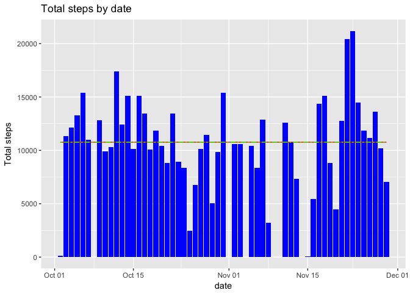
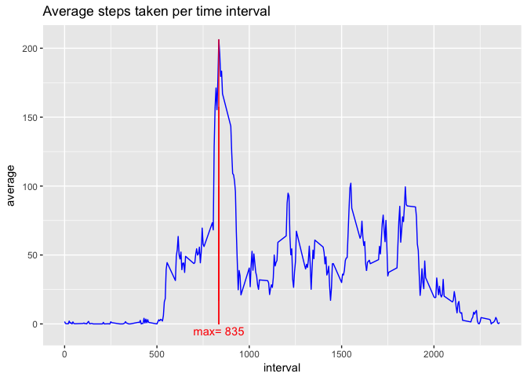
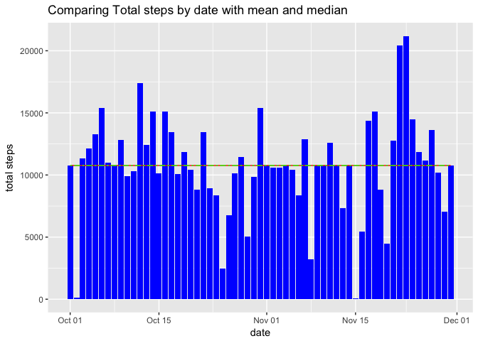
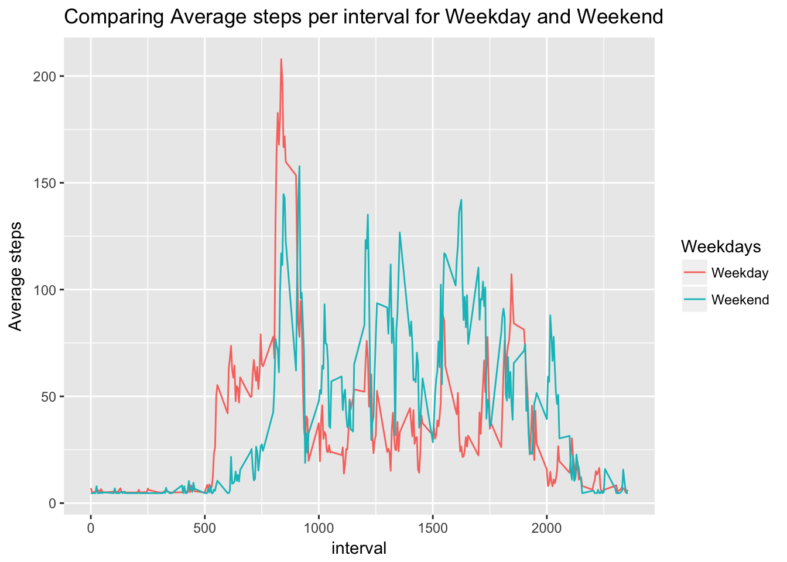

We will start by download the dataactivity file and load it into the df_data data frame:
if (!file.exists('dataactivity.zip')) {
download.file('https://d396qusza40orc.cloudfront.net/repdata%2Fdata%2Factivity.zip',
destfile = 'dataactivity.zip')
}
if (!file.exists('activity.csv')) {
unzip('dataactivity.zip')
}
df_data <- read.csv('activity.csv',sep=',',header=TRUE)
df_data$date <- as.Date(df_data$date)I then calculate the mean total number of steps taken per day
library(dplyr)##
## Attaching package: 'dplyr'## The following objects are masked from 'package:stats':
##
## filter, lag## The following objects are masked from 'package:base':
##
## intersect, setdiff, setequal, unionlibrary(ggplot2)
# Group the data by date and calculate the mean for each date (grouped by)
df_mean <- df_data[complete.cases(df_data),] # Delete rows that contains NAs
#Calculate the steps mean by date
df_mean <- group_by(df_mean, date)
df_mean <- summarise(df_mean,mean=mean(steps),median=median(steps),total=sum(steps))
#Print the total number of steps taken per day:
cols <- c("LINE1"="#f04546","LINE2"="#3591d1","BAR"="#62c76b")
ggplot(data=df_mean,aes(date,total)) + geom_histogram(stat='identity',fill='blue') +
geom_line(aes(y=mean(df_mean$total)),color='red') +
geom_line(aes(y=median(df_mean$total)),color='green',linetype=6) +
ggtitle('Total steps by date') +
labs(y='Total steps')## Warning: Ignoring unknown parameters: binwidth, bins, pad
#geom_hline(yintercept = mean(df_mean$total),color='LINE1') +
#geom_hline(yintercept = median(df_mean$total),linetype=6, aes(color='LINE2')) Then I will calculate the daily activity pattern by making a time series plot of the 5-minute interval (x-axis) and the average number of steps taken, averaged across all days (y-axis)
df_ts <- df_data[complete.cases(df_data),]
df_ts <- group_by(df_ts,interval)
df_ts <- summarise(df_ts,average=mean(steps))
ggplot(data=df_ts,aes(x=interval,y=average)) + geom_line(color='blue') +
geom_line(aes(x=df_ts$interval[which(df_ts$average == max(df_ts$average))]),color='red') +
annotate("text",x=df_ts$interval[which(df_ts$average == max(df_ts$average))],y=-5,
label=paste('max=',df_ts$interval[which(df_ts$average == max(df_ts$average))]),color='red')+
ggtitle('Average steps taken per time interval')
Next step we will identify missing value and impement a strategy to fill those missing values
df_filled <- df_data # Initiate a new Data Frame with df_data
#Calculate the total number of missing values sin the Data set
int_na <- sum(is.na(df_filled$steps))
paste('Number of NAs:',int_na)## [1] "Number of NAs: 2304"#Calculate the mean value for steps
int_meanSteps <- mean(df_filled$steps,na.rm = TRUE)
#Fill nas with the mean value
df_filled$steps[is.na(df_filled$steps)] <- int_meanSteps
#Group the DF by date
df_summary <- group_by(df_filled,date)
df_summary <- summarise(df_summary, total=sum(steps))
ggplot(df_summary, aes(x=date,y=total)) + geom_histogram(stat='identity', fill='blue') +
geom_line(aes(y=mean(df_summary$total)),color='red') + geom_line(aes(y=median(df_summary$total)),color='green',linetype=6) +
ggtitle('Comparing Total steps by date with mean and median') +
labs(y='total steps')## Warning: Ignoring unknown parameters: binwidth, bins, pad When comparing the 2 histograms I don’t see major impact of the NAs value on the overall study. Now we are going to check if there are difference in activity patterns between weekdays and weekend.
#Function used for sapply it will allow to convert weekdays into 2 variables factor
fun_formatweeks <- function(x) {
if(x %in% c('Monday','Tuesday','Wednesday','Thursday','Friday')) {
return('Weekday')
} else {
return('Weekend')
}
}
#End of Function
df_filled <- mutate(df_filled,weekday=weekdays(df_filled$date))
df_filled <- mutate(df_filled,weekday2=unname(sapply(df_filled$weekday,fun_formatweeks)))
df_filled$weekday2 <- as.factor(df_filled$weekday2) #Convert the column into factor
#Create a panel plot containing a time series plot of the 5-minute interval (x-axis) and the average number of steps taken, averaged across all weekday days or weekend days (y-axis).
df_summary <- group_by(df_filled,weekday2,interval)
df_summary <- summarise(df_summary,average=mean(steps))
ggplot(df_summary, aes(x=interval,y=average, color=weekday2)) + geom_line() +
ggtitle('Comparing Average steps per interval for Weekday and Weekend') +
labs(y='Average steps', colour='Weekdays')